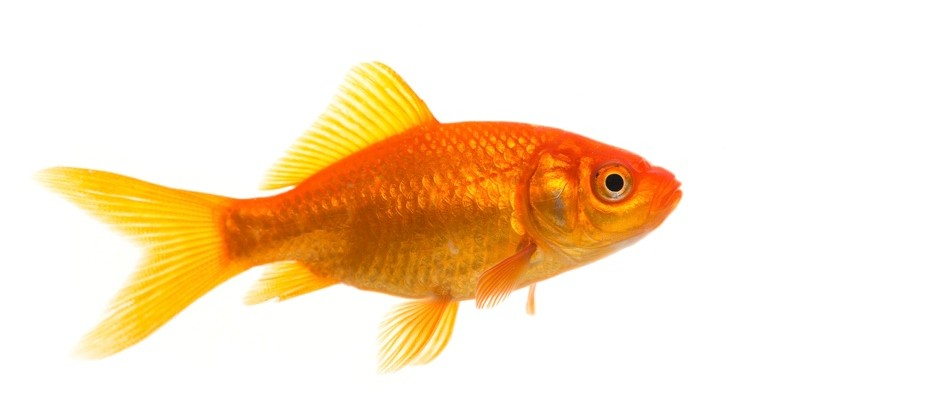

As an adolescent, Jobs’ dream was to become a Buddhist monk. In 1974, a trip to India sparked in him a lifelong interest in Buddhism that stayed with him forever.
Steve Jobs was a pescetarian and his favourite food was fish. He also liked carrots and fruits and spent some time as a fruitarian, meaning he only ate fruits, nuts, seeds, vegetables, and grains.

Steve Jobs was a college dropout and attended Reeds College for just 18 months. He continued his education by informally auditing classes. In Reeds, the course that attracted him the most was calligraphy. He used to audit calligraphy classes, which famously went on to influence the typography and font of Apple products.
Steve Jobs final words were monosyllables that he repeated thrice “Oh wow. Oh wow. Oh wow”. The reason behind this utterance is still a mystery.
The famous author Mona Simpson is his biological sister, who he tracked down later in life. Her first novel, Anywhere but Here, was about her relationship with her parents, who were Steve Job’s biological parents as well.
He followed strict rules and principles. He believed in being strict to follow that